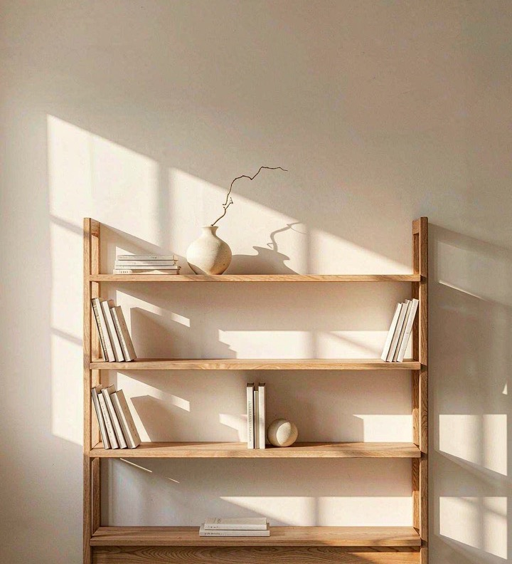
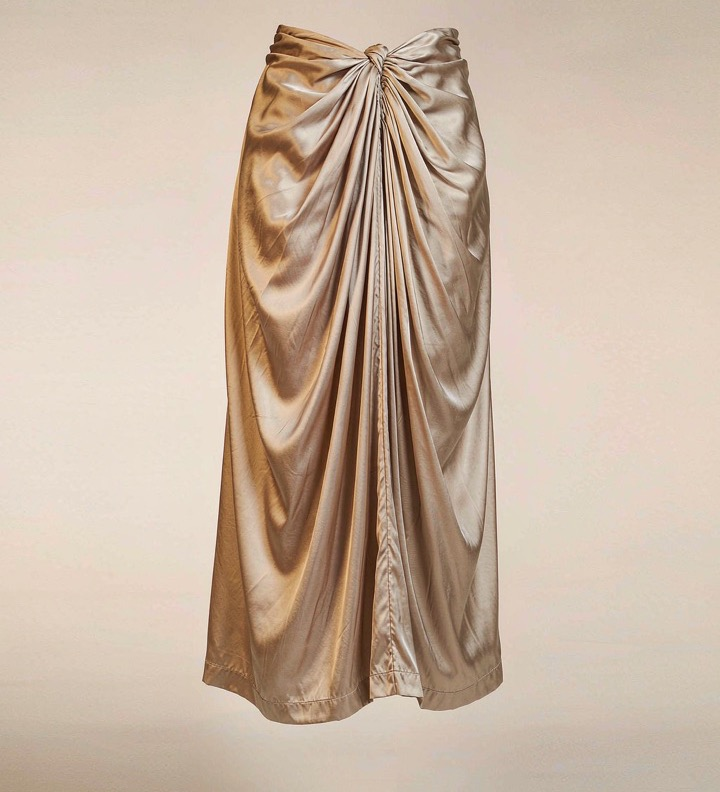
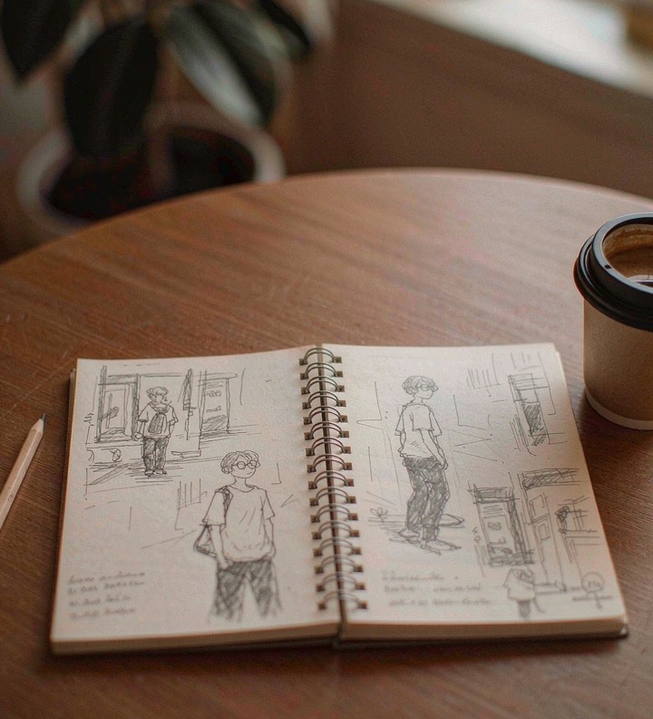
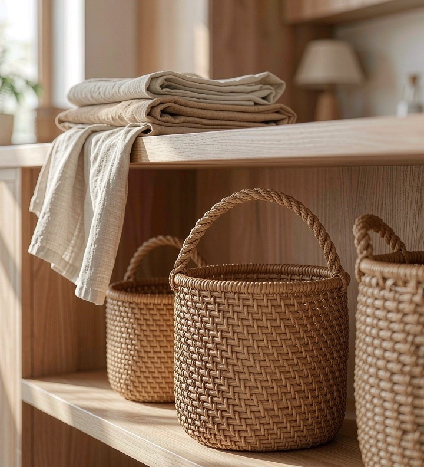

家居
A LITTLE HOME FOR YOUR IDEAS
一张想画的画，一件心动的衣服，一个想去的地方。
让散落的灵感有处可放，也有机会慢慢发生。
macOS 13+ · Apple Silicon 与 Intel · 本地保存



把收藏了很久的
那个角落，布置起来。
收藏不只是「以后再看」。
也是给生活留一点可能。
从心动，到行动
先收好，再整理，最后把它变成自己的想法。
不必一次完成，每一步都可以慢慢来。
博物架把精选灵感按分类收好，也让沉睡已久的收藏重新出现。打开灵感匣，和过去的心动偶遇。

收藏网页链接，或上传自己的图片。自动提取可访问页面的标题与候选封面，再用分类、搜索和心形标记整理。
在主题画板里摆放灵感卡片，写下便签，拖动和缩放画布。为穿搭、家居或下一次创作，找到属于你的组合。
A SPACE OF YOUR OWN
收藏、分类、画板和图片保存在本机，无需注册账号。
解析链接时会访问原网页；云同步与数据导入导出尚未提供。
一些你可能想知道的事
需要 macOS 13 或更新版本。发布的 universal 安装包同时支持 Apple Silicon（M 系列）和 Intel Mac，无需选择处理器版本。
下载最新版本的 DMG，打开后把「灵感匣」拖到 Applications（应用程序）文件夹。也可下载 ZIP，解压后将应用移动到该文件夹。各版本的签名与公证情况请查看发布说明。
会尝试读取页面标题与公开声明的候选图片。需要登录、出现验证或没有封面信息的页面可能无法自动获取，你仍可上传图片、手动填写标题和描述。
保存在 Mac 的 Application Support/com.chenyun.inspiration-box 目录下。请随设备备份妥善保存数据；目前没有云同步，也没有内置导入导出功能。
欢迎在 GitHub Issues 反馈。描述你的 macOS 版本、应用版本和复现步骤，会帮助我们更快定位问题。
给灵感一个安放的地方
macOS 13+ · 通用安装包
查看所有版本与更新记录 ↗